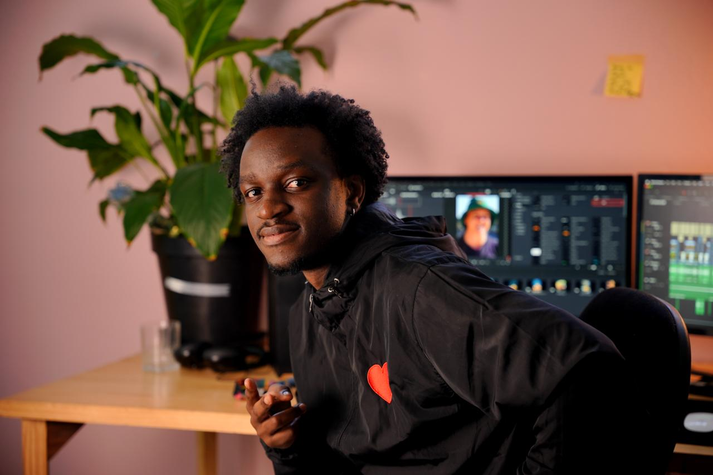
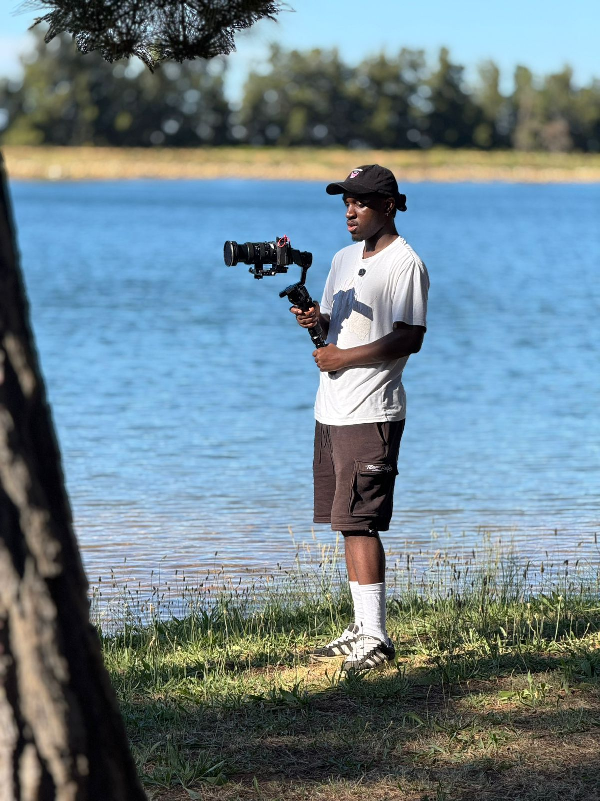
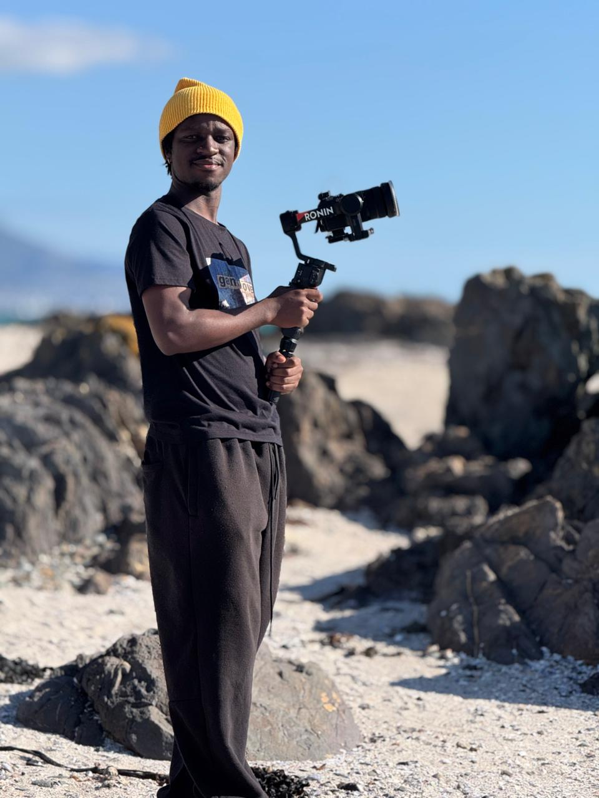
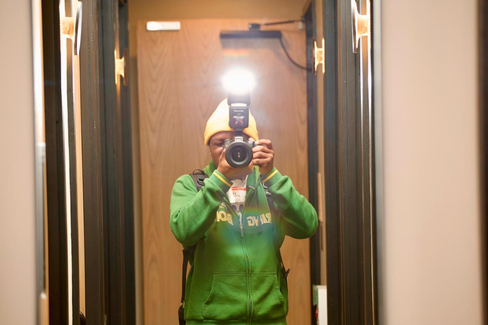
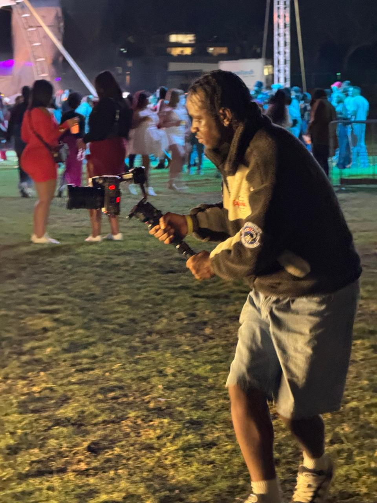

Storybox Studios
Filmmaker, videographer and content creator based in Cape Town, South Africa. For over eight years I've been capturing moments that matter — from intimate portraits to large-scale events, brand campaigns to personal passion projects.
My approach is rooted in intentional storytelling. Every frame serves a purpose, every edit carries emotion. The best visual work doesn't just document — it transforms how people see themselves and the world around them.
Based in
Cape Town
Available for
Local & Travel
Languages
English & Afrikaans
Experience
8+ Years
Behind the Lens
From lakeside shoots to festival nights, from rocky coastlines to the editing suite — every location is a canvas.

Lakeside · On Location
Coastline · Cape Town
Self Portrait · Behind the Camera
Festival Night · Event CoverageThe Story
I've worked with brands, artists, couples, and creatives across diverse industries. Whether it's a cinematic wedding film, a hard-hitting music video, or a corporate campaign that actually feels human, I bring the same level of craft and care to every project.
When I'm not behind a camera or timeline, you'll find me exploring Cape Town's landscapes, experimenting with new techniques, and constantly pushing the boundaries of what visual storytelling can achieve.
Tools & Skills
The Journey
That's where it really started. No big setup, just curiosity. Got into editing first, trying to understand how stories are built through cuts, pacing, and emotion. Didn't know everything, but knew I liked the process of turning raw footage into something that felt like something.
Started taking it seriously. Got deeper into Premiere Pro and DaVinci Resolve — not just learning how they work, but how to move fast and think inside them. Picked up graphic design alongside, building a fuller skillset. Started seeing everything as connected.
Wanted more than just clean edits. Got into motion graphics and started learning Fusion in Resolve. Wasn't just cutting clips anymore — was creating visuals, adding layers, building moments from scratch. That shift changed how I saw editing completely.
Got thrown into real environments. Live editing, sports, events — high pressure, fast turnaround, no room for hesitation. Had to trust my instincts, work fast, and make decisions on the spot. My editing became more about rhythm and energy than just clean cuts.
Became more complete. Wasn't just editing anymore — was shooting too. Being behind the camera and then behind the edit gave me a different perspective. Started understanding the full process, from capturing the moment to shaping the final story.
Now I know what I bring. After five years, I've built a style that feels like mine — cinematic, intentional, and driven by rhythm. Whether it's live edits, sports content, or crafted visual pieces, I focus on making people feel something.
At the core of it, I don't just edit videos — I build emotion into them.